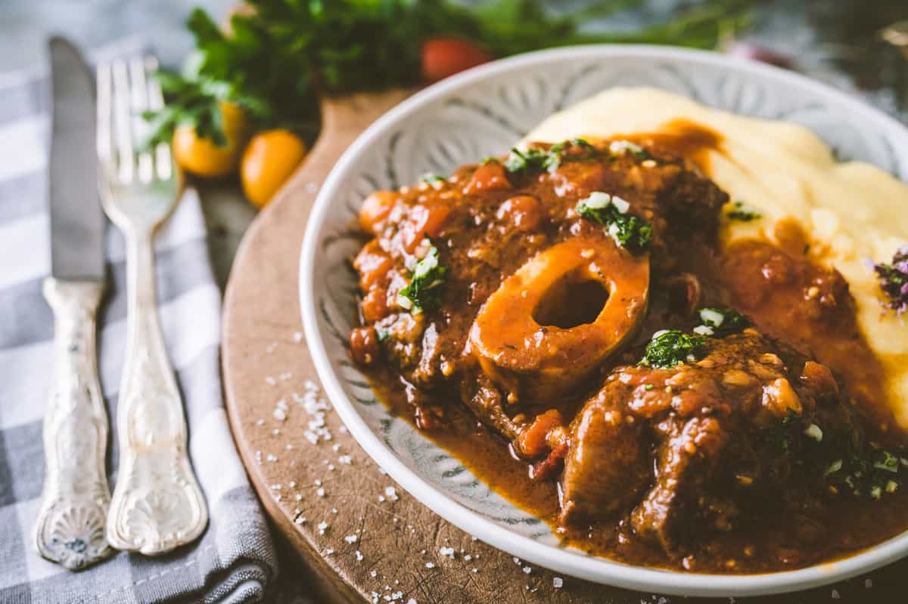

Osso Buco

How to make an authentic Italian Osso Buco
Let's get to it shall we? In Italy, Osso Buco is known for its tender meat and a selection of tanin-heavy red wines to accompany the dish. It is especially prominently featured during the holidays as it is a specialty that takes time to prepare properly.
Without further ado, let's dive right in.
Ingredients
- beef or veal shanks , about 1/2 pound each
- 1/2 cup flour for dredging
- 1 tablespoon cooking oil (I use avocado)
- 1 tablespoon butter
- 1/4 pound pancetta (can substitute thick cut bacon), diced
- 1 medium yellow onion, finely diced
- 1 carrot, diced
- 1 celery rib, diced
- 2 cloves garlic, minced
- 1 cup dry white wine, e.g. pinot grigio, sauvignon blanc, chardonnay
- 2 cups quality chicken broth (we use and recommend Aneto), can also used veal stock if you have access to it. Beef broth can also be used though chicken broth tastes more "elegant"
- 1 1/2 tablespoons tomato paste
- 1 bay leaf
- 1 teaspoon dried thyme leaves
- 1 teaspoon salt
- 1/2 teaspoon freshly ground black pepper
- zest of one lemon
- 3 tablespoons finely minced parsley
- 4 cloves garlic, minced
- Gremolata (optional)
Instructions
- Pat the shanks dry with a paper towel and lightly dredge in flour, shaking off the excess. Heat the oil and butter in a Dutch oven or medium pot and brown the shanks on both sides and transfer to a plate. Set aside.
If making the gremolata, combine the ingredients in a small bowl, cover and refrigerate until ready to use.
- Add the pancetta or bacon and cook until browned, then add the onions and cook for 5-7 minutes until soft and translucent. Add the carrots, celery, and garlic and cook another 3-4 minutes until softened. Add the wine and boil until reduced by half. Add the broth, seasonings, and tomato paste.
Return the browned shanks to the pot, bring to a boil, reduce the heat to a very low simmer, cover and simmer for 1 1/2 to 2 hours or until the meat is fork tender. Add salt and pepper to taste. Remove and discard the bay leaf.
- Serve with creamy polenta or saffron risotto and, if using, sprinkle with gremolata. (See blog post for other serving recommendations.)